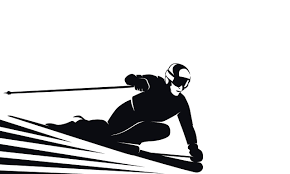

I love going skiing during the winter because Ive been skiing ever since I was 3 so its just a fun tradition to go up every year with my family. My favorite mountain to ski at is probably Keystone because they have the best black diamonds to ski on. I usually love going on tree trails with my dad through moguls and double black diamonds. Although the part I dont like about skiing is waking up at 4 in the morning but its usually worth!

Image by unkown from needpix.com